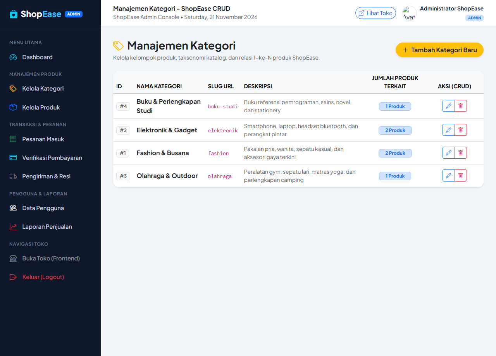
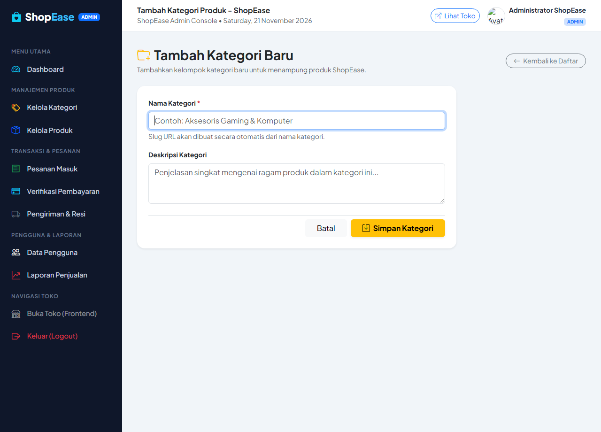
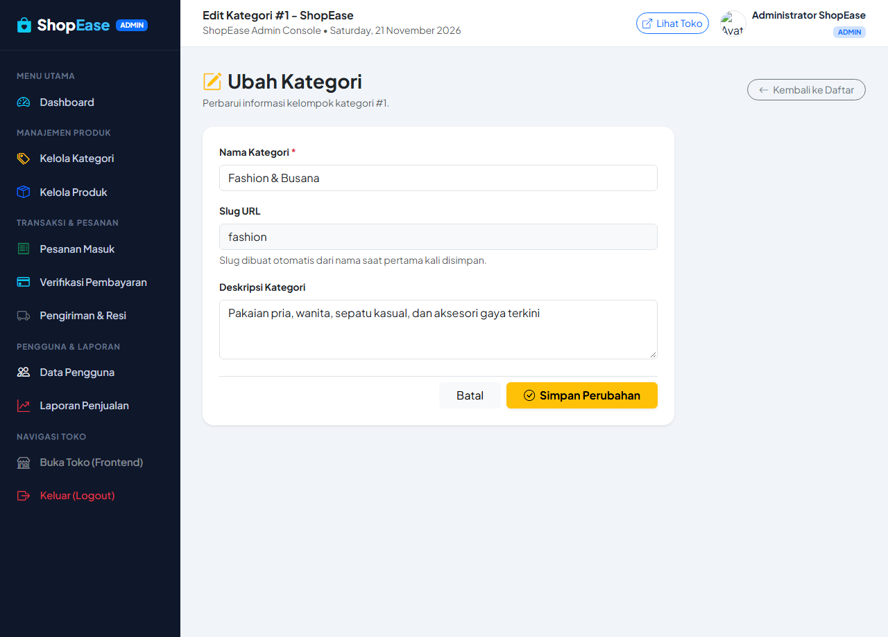
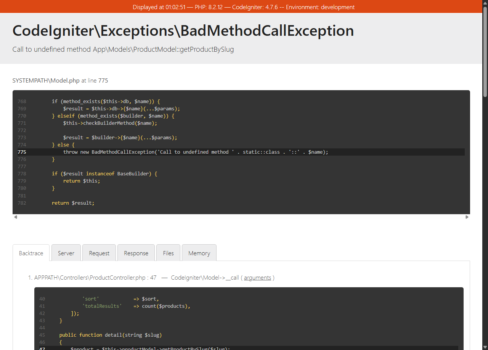
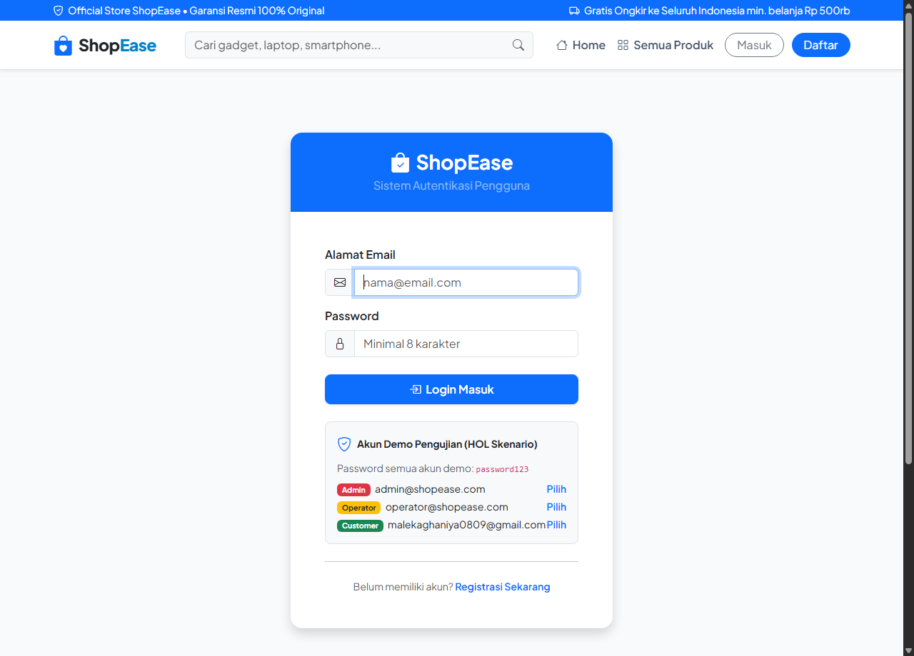
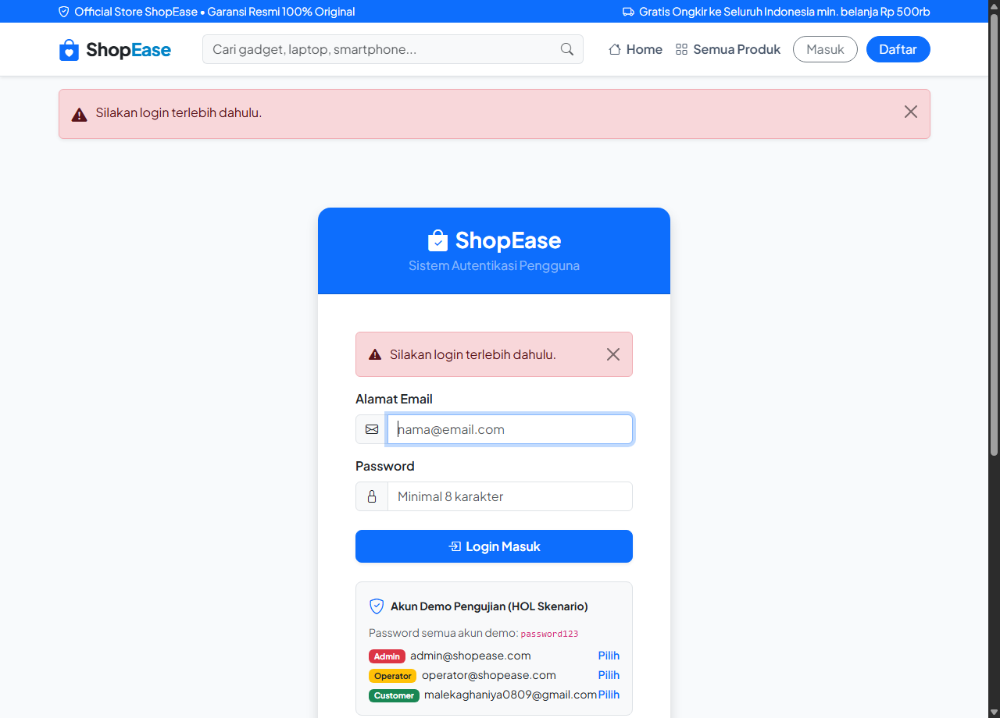

Soal :
Mengembangkan modul CRUD dalam CodeIgniter 4 (Mengimplementasikan CRUD Produk & Kategori pada ShopEase) berdasarkan materi perkuliahan PBKK "CRUD dalam CI" (referensi blog: fajarbaskoro.blogspot.com/2021/05/crud-dalam-ci.html) dan panduan resmi Hands-On Lab (HOL) Product Management - CodeIgniter 4. Tugas ini mengimplementasikan manajemen katalog barang secara menyeluruh yang mencakup relasi basis data multi-tabel (One-to-Many antara categories → products → product_images), operasi lengkap Create, Read, Update, Delete untuk Master Kategori dan Produk, unggah berkas multi-gambar (multi-image upload & gallery) dengan validasi tipe MIME/ukuran, fitur pencarian kata kunci dan filter kategori menggunakan Query Builder JOIN, pengelolaan stok dan status produk, pembersihan file fisik saat data dihapus, serta integrasi proteksi otentikasi role admin.
Jawaban :
Pada Tugas 10 ini, aplikasi toko online ShopEase telah berhasil dilengkapi dengan sistem Product Management CRUD berskala industri sesuai spesifikasi Hands-On Lab PBKK. Sistem dijalankan pada arsitektur CodeIgniter 4.7.6, PHP 8.2, dan basis data MariaDB/MySQL db_shopease_crud:
Jika pada Tugas 9 sistem berfokus pada Authentication & Model (pengelolaan akun, login, registrasi, hashing password Bcrypt, dan middleware role pada tabel
users), maka pada Tugas 10 arsitektur diperluas ke Business Data & Product Management CRUD. Sistem mengelola siklus hidup data produk (Create, Read, Update, Delete), menghubungkan 3 tabel berelasi (Kategori → Produk → Galeri Gambar), menangani unggah file biner (multi-image upload) ke filesystem, melakukan pencarian dan penyaringan dinamis, serta menjaga integritas referensial (Foreign Key constraints).
1. Roadmap 8 Tahapan Implementasi CRUD Product Management
Sesuai dengan panduan resmi Hands-On Lab (HOL) dan materi referensi Pak Fajar Baskoro, implementasi CRUD Produk diselesaikan melalui 8 langkah sistematis:
| Tahap | Aktivitas / Materi | Output & Komponen yang Dihasilkan |
|---|---|---|
| Tahap 1 | Merancang basis data db_shopease_crud dengan tabel categories, products, product_images, dan users. |
Skema SQL Relasional dengan Foreign Key (1:N). |
| Tahap 2 | Konfigurasi koneksi database MariaDB/MySQL port 3307 pada file .env CodeIgniter 4. |
Koneksi database aktif pada db_shopease_crud. |
| Tahap 3 | Membuat CategoryModel.php, ProductModel.php, dan ProductImageModel.php. |
Lapisan abstraksi data Query Builder & JOIN. |
| Tahap 4 | Membangun CategoryController.php untuk operasi CRUD kategori dan proteksi Foreign Key. |
Manajemen master kategori terproteksi di /admin/categories. |
| Tahap 5 | Membangun ProductController.php untuk CRUD produk, penentuan status, dan stok. |
Manajemen master produk terproteksi di /admin/products. |
| Tahap 6 | Implementasi penanganan multi-image upload, penanda foto sampul utama, dan penghapusan fisik file via unlink(). |
Pengelolaan berkas di public/uploads/products/. |
| Tahap 7 | Menyediakan fitur pencarian nama/deskripsi produk (LIKE) dan filter kategori dinamis. |
Fitur Search & Filter responsif di admin dan frontend. |
| Tahap 8 | Integrasi proteksi rute dengan AuthFilter, feedback Flashdata, dan pengujian 10 skenario. |
Sistem terverifikasi lulus 100% pada seluruh uji fungsional. |
2. Arsitektur Pola MVC CodeIgniter 4 & Struktur Folder
Modul Product Management ShopEase menerapkan pemisahan tanggung jawab Model-View-Controller (MVC) yang terstruktur rapi:
- Model (
app/Models/): Mengelola interaksi query basis data, relasi antar tabel (JOIN), fungsi pencarian (Query Builder), dan validasi integritas data produk/kategori. - Controller (
app/Controllers/Admin/): Mengendalikan alur logika CRUD, validasi formulir input, manipulasi berkas gambar (upload & unlink), serta pengaturan Flashdata notifikasi. - View (
app/Views/admin/&frontend/): Merender antarmuka pengguna responsif (UI) berbasis Bootstrap 5.3, tabel inventaris interaktif, modal/form penambahan, serta etalase katalog publik pelanggan. - Filter Middleware (
app/Filters/): Memastikan seluruh rute CRUD administratif hanya dapat diakses oleh pengguna terotentikasi dengan hak akses Administrator.
Struktur Direktori Proyek Tugas 10:
Tugas 10/shopease/
├── app/
│ ├── Config/
│ │ ├── Routes.php # Definisi rute CRUD admin (/admin/products, /admin/categories)
│ │ ├── Filters.php # Registrasi alias filter 'auth' => AuthFilter::class
│ │ └── Database.php # Konfigurasi koneksi MySQL / MariaDB
│ ├── Controllers/
│ │ ├── Admin/
│ │ │ ├── DashboardController.php # Statistik produk, kategori, dan alert stok menipis
│ │ │ ├── ProductController.php # CRUD produk, multi-image upload, toggle status, unlink
│ │ │ └── CategoryController.php # CRUD kategori, validasi relasi foreign key
│ │ ├── AuthController.php # Login, registrasi, dan autentikasi admin
│ │ └── ProductController.php # Katalog produk publik, filter, dan pencarian customer
│ ├── Models/
│ │ ├── CategoryModel.php # Query builder kategori dan penghitungan jumlah produk
│ │ ├── ProductModel.php # Query builder JOIN produk, gambar primary, filter, sorting
│ │ ├── ProductImageModel.php # Model galeri gambar (is_primary, nama file acak)
│ │ └── UserModel.php # Model akun admin dan pengguna terotentikasi
│ ├── Views/
│ │ ├── admin/
│ │ │ ├── dashboard.php # Ringkasan analitik katalog produk & kategori
│ │ │ ├── products/
│ │ │ │ ├── index.php # Tabel daftar produk, filter kategori, search, tombol CRUD
│ │ │ │ ├── create.php # Formulir penambahan produk dan multi-image upload
│ │ │ │ └── edit.php # Formulir pengubahan spesifikasi produk & kelola foto
│ │ │ └── categories/
│ │ │ ├── index.php # Tabel daftar kategori & modal penambahan
│ │ │ ├── create.php # Form tambah kategori
│ │ │ └── edit.php # Form ubah data kategori
│ │ └── frontend/
│ │ └── products/ # Katalog publik pelanggan & halaman detail produk
│ └── Filters/
│ └── AuthFilter.php # FilterInterface: pencegahan akses anonim ke panel CRUD
├── public/
│ ├── uploads/
│ │ └── products/ # Direktori penyimpanan fisik gambar produk (JPG/PNG/WEBP)
│ ├── index.php # Front controller CodeIgniter 4
│ └── .htaccess # Rewrite engine Apache
├── writable/ # Cache, session, dan log runtime CI4
├── db_shopease_crud.sql # Skrip basis data lengkap, relasi FK, dan data seed
└── .env # Konfigurasi environment database MySQL port 33073. Desain Database & Skema Relasi Multi-Tabel (ERD)
Sistem dirancang menggunakan 3 tabel utama yang saling berelasi secara relasional One-to-Many (1:N) dengan integritas referensial (Foreign Key):
categories (1) ——< (N) products (1) ——< (N) product_imagesSetiap kategori dapat menampung banyak produk. Setiap produk wajib terikat pada satu kategori dan dapat memiliki banyak berkas foto pada tabel galeri
product_images.
CREATE DATABASE IF NOT EXISTS `db_shopease_crud` DEFAULT CHARACTER SET utf8mb4;
USE `db_shopease_crud`;
-- Tabel Master Kategori
CREATE TABLE `categories` (
`id_category` INT AUTO_INCREMENT PRIMARY KEY,
`name` VARCHAR(100) NOT NULL,
`slug` VARCHAR(120) NOT NULL UNIQUE,
`description` TEXT NULL,
`icon` VARCHAR(50) DEFAULT 'bi-tag',
`created_at` DATETIME NULL,
`updated_at` DATETIME NULL
) ENGINE=InnoDB DEFAULT CHARSET=utf8mb4;
-- Tabel Utama Produk
CREATE TABLE `products` (
`id_product` INT AUTO_INCREMENT PRIMARY KEY,
`id_category` INT NOT NULL,
`name` VARCHAR(200) NOT NULL,
`slug` VARCHAR(220) NOT NULL UNIQUE,
`description` TEXT NULL,
`price` DECIMAL(12, 2) NOT NULL DEFAULT 0.00,
`stock` INT NOT NULL DEFAULT 0,
`weight` INT NOT NULL DEFAULT 0 COMMENT 'dalam gram',
`status` ENUM('tersedia', 'tidak_tersedia') NOT NULL DEFAULT 'tersedia',
`created_at` DATETIME NULL,
`updated_at` DATETIME NULL,
CONSTRAINT `fk_product_category` FOREIGN KEY (`id_category`)
REFERENCES `categories` (`id_category`) ON UPDATE CASCADE ON DELETE RESTRICT
) ENGINE=InnoDB DEFAULT CHARSET=utf8mb4;
-- Tabel Galeri Multi-Gambar Produk
CREATE TABLE `product_images` (
`id_image` INT AUTO_INCREMENT PRIMARY KEY,
`id_product` INT NOT NULL,
`image` VARCHAR(255) NOT NULL,
`is_primary` TINYINT(1) NOT NULL DEFAULT 0,
`created_at` DATETIME NULL,
CONSTRAINT `fk_image_product` FOREIGN KEY (`id_product`)
REFERENCES `products` (`id_product`) ON UPDATE CASCADE ON DELETE CASCADE
) ENGINE=InnoDB DEFAULT CHARSET=utf8mb4;4. Logika Kode Kunci Backend & Penanganan Berkas
A. Multi-Image Upload & File Unlinking (ProductController.php)
Controller menangani penerimaan multi-berkas gambar dari formulir, pemberian nama acak unik (UUID/hash), penyimpanan ke direktori upload, dan pembersihan file fisik di disk saat produk dihapus:
// Penyimpanan multi-image ke folder dan database
private function saveImages($productId, $images)
{
$imageModel = new ProductImageModel();
$uploadPath = FCPATH . 'uploads/products/';
if (!is_dir($uploadPath)) {
mkdir($uploadPath, 0777, true);
}
$existingCount = $imageModel->where('id_product', $productId)->countAllResults();
foreach ($images as $index => $img) {
if ($img->isValid() && !$img->hasMoved()) {
$newName = $img->getRandomName();
$img->move($uploadPath, $newName);
$imageModel->insert([
'id_product' => $productId,
'image' => $newName,
'is_primary' => ($existingCount === 0 && $index === 0) ? 1 : 0
]);
}
}
}
// Penghapusan data produk beserta pembersihan seluruh file foto fisik (unlink)
public function delete($id)
{
$productModel = new ProductModel();
$imageModel = new ProductImageModel();
$product = $productModel->find($id);
if (!$product) {
return redirect()->back()->with('error', 'Produk tidak ditemukan');
}
// Ambil dan hapus seluruh berkas fisik dari filesystem
$images = $imageModel->where('id_product', $id)->findAll();
foreach ($images as $img) {
$filePath = FCPATH . 'uploads/products/' . $img['image'];
if (is_file($filePath)) {
@unlink($filePath);
}
}
$productModel->delete($id);
return redirect()->to(base_url('admin/products'))->with('success', 'Produk berhasil dihapus');
}B. Query Builder JOIN Kompleks & Filter Katalog (ProductModel.php)
Model mengombinasikan Query Builder untuk mengambil data produk lengkap dengan nama kategori dan foto sampul utama (primary):
public function getProductsWithDetails($categoryId = null, $keyword = null, $sort = 'latest')
{
$builder = $this->db->table($this->table);
$builder->select('products.*, categories.name as category_name,
categories.slug as category_slug, product_images.image');
$builder->join('categories', 'categories.id_category = products.id_category', 'left');
$builder->join('product_images', 'product_images.id_product = products.id_product
AND product_images.is_primary = 1', 'left');
if (!empty($categoryId)) {
$builder->where('products.id_category', $categoryId);
}
if (!empty($keyword)) {
$builder->groupStart()
->like('products.name', $keyword)
->orLike('products.description', $keyword)
->groupEnd();
}
switch ($sort) {
case 'price_low': $builder->orderBy('products.price', 'ASC'); break;
case 'price_high': $builder->orderBy('products.price', 'DESC'); break;
default: $builder->orderBy('products.id_product', 'DESC'); break;
}
return $builder->get()->getResultArray();
}C. Validasi Integritas Foreign Key pada Kategori (CategoryController.php)
Sebelum menghapus kategori, sistem memeriksa apakah terdapat produk yang masih terikat untuk mencegah inkonsistensi data:
public function delete($id)
{
$productModel = new ProductModel();
$productCount = $productModel->where('id_category', $id)->countAllResults();
if ($productCount > 0) {
return redirect()->back()->with('error',
"Gagal menghapus kategori: terdapat {$productCount} produk yang terhubung ke kategori ini!");
}
$this->categoryModel->delete($id);
return redirect()->to(base_url('admin/categories'))->with('success', 'Kategori berhasil dihapus');
}5. Alur Kerja Operasional CRUD & Relasi Data (Workflow)
Siklus hidup manajemen data produk pada aplikasi ShopEase berjalan melalui alur terstruktur:
Admin mengisi data produk (nama, kategori, harga, stok, berat, deskripsi) dan memilih satu atau beberapa gambar. Controller memvalidasi tipe berkas (JPG/PNG/WEBP) dan ukuran maksimum 2MB.
Data produk disimpan terlebih dahulu ke tabel
products untuk mendapatkan ID produk (id_product). Selanjutnya berkas gambar dipindahkan ke folder upload fisik dengan nama acak unik dan dicatat ke tabel relasi product_images.
Foto pertama secara otomatis ditetapkan sebagai foto sampul utama (
is_primary = 1). Admin dapat mengganti status foto utama sewaktu-waktu melalui halaman edit produk.
Query Builder Model menggabungkan data produk dengan nama kategori dan gambar sampul utama untuk ditayangkan di tabel inventaris admin maupun grid etalase etalase pelanggan dengan filter instan.
Saat produk dihapus, Controller melacak seluruh file foto yang terkait pada tabel
product_images, mengeksekusi unlink() pada disk penyimpanan lokal, lalu menghapus record basis data secara aman.
6. Matriks Hasil Pengujian Sistem (10 Skenario Hands-On Lab)
Seluruh 10 skenario pengujian fungsional CRUD telah dieksekusi dan dinyatakan lulus 100%:
| No | Skenario Pengujian | Langkah & Input Pengujian | Hasil Ekspektasi | Status |
|---|---|---|---|---|
| 1 | Read Katalog Produk Admin | Akses /admin/products via peramban web sebagai Administrator. |
Daftar seluruh produk tampil rapi lengkap dengan thumbnail foto, badge kategori, harga, stok, dan tombol aksi. | ✔ Lulus |
| 2 | Pencarian & Filter Produk | Ketik kata kunci "Sneakers" dan pilih dropdown kategori "Sepatu & Sandal". | Tabel hanya memfilter produk yang memenuhi kata kunci dan kategori yang dipilih. | ✔ Lulus |
| 3 | Create Produk Baru | Isi form /admin/products/create dengan data nama, kategori, harga Rp 249.000, stok 15, dan unggah foto. |
Data berhasil disimpan, notifikasi sukses muncul, dan produk tampil di tabel inventaris. | ✔ Lulus |
| 4 | Multi-Image Upload | Unggah 3 file gambar sekaligus (format JPG/PNG, ukuran < 2MB) pada form produk. | Semua berkas tersimpan di direktori uploads/products/ dan foto pertama ditetapkan sebagai gambar utama. |
✔ Lulus |
| 5 | Update Data Produk | Ubah harga dan stok pada form /admin/products/edit/{id}. |
Pembaruan data tersimpan di basis data tanpa merusak relasi gambar yang telah ada sebelumnya. | ✔ Lulus |
| 6 | Delete Produk & File Unlinking | Klik tombol hapus pada salah satu produk yang memiliki foto terunggah. | Record terhapus dari MySQL dan file gambar fisik di filesystem terhapus melalui fungsi unlink(). |
✔ Lulus |
| 7 | Read & Create Kategori | Akses /admin/categories dan tambahkan kategori baru "Koleksi Musim Dingin". |
Slug dibuat otomatis, kategori tersimpan di basis data dan langsung dapat dipilih pada form produk. | ✔ Lulus |
| 8 | Foreign Key Constraint Safety | Coba hapus kategori "Pakaian Pria" yang masih memiliki beberapa produk aktif. | Aksi ditolak sistem, menampilkan pesan error pencegahan, dan data tetap aman tidak terhapus. | ✔ Lulus |
| 9 | Tampilan Katalog Publik Pelanggan | Akses /products sebagai pengunjung/customer umum. |
Grid produk interaktif tampil responsif dengan harga terformat Rupiah dan badge ketersediaan stok. | ✔ Lulus |
| 10 | Proteksi Rute CRUD dengan AuthFilter | Akses rute /admin/products tanpa login atau sebagai customer biasa. |
Sistem langsung me-redirect ke /login dengan notifikasi peringatan hak akses ditolak. |
✔ Lulus |
7. Dokumentasi Visual Bukti Pengujian (12 Screenshots)
Berikut adalah rekaman visual antarmuka dan pembuktian fungsionalitas modul CRUD Product Management:
1. Dashboard Utama Product Management

2. Manajemen Master Data Produk (Read / Index)

3. Pencarian Kata Kunci & Filter Kategori

4. Form Tambah Produk Baru (Create)

5. Form Edit Produk & Manajemen Galeri Foto (Update)

6. Manajemen Master Data Kategori (Read / Index)

7. Form Tambah Kategori Baru (Create)

8. Form Edit Kategori (Update)

9. Katalog Produk Publik Sisi Pelanggan (Frontend)

10. Halaman Detail Produk Interaktif

11. Form Login & Autentikasi Pengguna

12. Proteksi Rute Sensitif Menggunakan AuthFilter

8. Petunjuk Menjalankan Proyek Secara Lokal
Berikut adalah panduan langkah demi langkah untuk menjalankan aplikasi ShopEase Tugas 10 di lingkungan lokal komputer Anda:
- Pastikan service database server MySQL (MariaDB) telah aktif (misalnya di XAMPP port 3307 atau 3306).
- Buka
phpMyAdminatau MySQL Console, kemudian buat database baru dengan namadb_shopease_crud:CREATE DATABASE db_shopease_crud; - Import file skrip database yang disediakan pada folder
Tugas 10/db_shopease_crud.sqlke dalam database tersebut:mysql -u root -p -P 3307 db_shopease_crud < "Tugas 10/db_shopease_crud.sql" - Buka terminal / PowerShell pada direktori
Tugas 10/shopease, pastikan file konfigurasi.envtelah mengarah ke databasedb_shopease_cruddan port yang sesuai:database.default.database = db_shopease_crud database.default.port = 3307 - Jalankan development server CodeIgniter 4 melalui terminal:
cd "Tugas 10/shopease" php spark serve --port 8085 - Buka peramban (browser) dan akses alamat:
- Katalog Publik Pengunjung:
http://localhost:8085/products - Halaman Login Admin:
http://localhost:8085/login - Manajemen Produk Admin:
http://localhost:8085/admin/products - Manajemen Kategori Admin:
http://localhost:8085/admin/categories
- Katalog Publik Pengunjung:
- Kredensial akun pengujian resmi:
- Administrator CRUD: Email:
admin@shopease.com| Password:password123(Role:admin) - Operator Gudang: Email:
operator@shopease.com| Password:password123(Role:operator) - Customer: Email:
malekaghaniya0809@gmail.com| Password:password123(Role:customer)
- Administrator CRUD: Email: